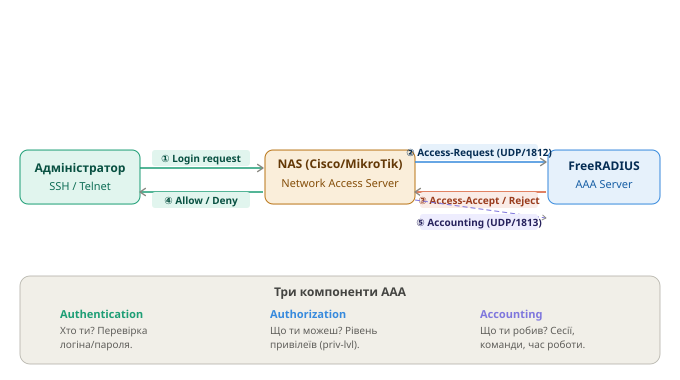

Розгортання та налаштування RADIUS сервера
Курс: Безпека електронно-комунікаційних мереж | 4 курс
1 Протокол RADIUS та принцип AAA
RADIUS (Remote Authentication Dial-In User Service) - мережевий протокол (RFC 2865/2866) для централізованої аутентифікації, авторизації та обліку (AAA) при доступі до мережевого обладнання

| Компонент | Функція |
|---|---|
| Authentication | Хто ти? Перевірка логіна/пароля або сертифіката |
| Authorization | Що ти можеш? Визначення привілеїв (privilege level) |
| Accounting | Що ти робив? Запис сесій, команд, часу підключення |
Порти:
| Порт | Призначення |
|---|---|
UDP/1812 |
Authentication та Authorization |
UDP/1813 |
Accounting |
UDP/1645 |
Authentication (застарілий, сумісність) |
UDP/1646 |
Accounting (застарілий, сумісність) |
2 Розгортання FreeRADIUS
2.1 Встановлення
# Оновити систему та встановити FreeRADIUS
apt update && apt upgrade -y
apt install -y freeradius freeradius-utils
# Запуск та автозавантаження
systemctl start freeradius
systemctl enable freeradius
systemctl status freeradius
2.2 Структура конфігурації
/etc/freeradius/3.0/
├── radiusd.conf ← головний конфіг (порти, логування, модулі)
├── clients.conf ← NAS-клієнти (мережеве обладнання)
├── users ← локальні користувачі
├── mods-enabled/ ← увімкнені модулі (symlinks)
├── mods-available/ ← доступні модулі
├── sites-enabled/ ← увімкнені virtual servers
│ └── default ← основний virtual server
└── certs/ ← сертифікати для EAP/TLS
2.3 Генерація сертифікатів (для EAP/TLS, 802.1X)
3 Налаштування користувачів
Файл: /etc/freeradius/3.0/users
# Формат: username Attribute := "value", Attribute2 = "value2"
# Базовий користувач для адміністрування обладнання
admin Cleartext-Password := "P@$$w0rd"
Service-Type = NAS-Prompt-User,
Cisco-AVPair = "shell:priv-lvl=15"
# Звичайний оператор (privilege level 5)
operator Cleartext-Password := "Op3r@t0r"
Service-Type = NAS-Prompt-User,
Cisco-AVPair = "shell:priv-lvl=5"
# Користувач тільки для читання (privilege level 1)
readonly Cleartext-Password := "Readonly1"
Service-Type = NAS-Prompt-User,
Cisco-AVPair = "shell:priv-lvl=1"
Cisco-AVPair shell:priv-lvl
priv-lvl=15 — повний доступ (enable рівень).
priv-lvl=1 — тільки базові команди (show).
priv-lvl=5 — користувацький рівень (визначається через privilege команди на Cisco)
3.1 Налаштування NAS-клієнтів
Файл: /etc/freeradius/3.0/clients.conf
# Один конкретний пристрій
client cisco-r1 {
ipaddr = 10.60.254.1
secret = C!sc0123
shortname = cisco-r1
nastype = cisco
}
# Підмережа з мережевим обладнанням (Management VLAN)
client management-vlan {
ipaddr = 10.60.254.0/24
secret = Str0ngSecret!
shortname = mgmt-network
}
# MikroTik
client mikrotik-r1 {
ipaddr = 10.60.254.2
secret = Mikr0t!k
shortname = mikrotik-r1
nastype = other
}
Secret — спільний ключ
Secret повинен збігатись на NAS і в clients.conf. Використовуй різні secrets для різних пристроїв — якщо один пристрій скомпрометований, решта залишаться захищеними
3.2 Перезапуск та тестування
# Перезапустити після змін конфігурації
systemctl restart freeradius
# Зупинити сервіс та запустити в debug-режимі
systemctl stop freeradius
freeradius -X
# Тестування автентифікації через radtest
radtest admin P@$$w0rd 127.0.0.1 0 testing123
# Параметри: username password server nas-port-number secret
# Тестування з конкретного NAS IP
radtest admin P@$$w0rd 10.60.254.101 0 C!sc0123 -x
# Очікуваний успішний результат:
# Received Access-Accept Id 0 from 127.0.0.1:1812 to 0.0.0.0:0 length 20
4 Налаштування мережевих пристроїв
4.1 Cisco IOS — базова AAA для SSH
! Увімкнути AAA (обов'язковий перший крок)
aaa new-model
! Authentication: спочатку RADIUS, потім локальна БД як резерв
aaa authentication login default group radius local
! Authorization: привілеї визначаються RADIUS, резерв — локальна
aaa authorization exec default group radius local if-authenticated
! Accounting: запис подій початку/завершення сесії
aaa accounting exec default start-stop group radius
! Налаштування RADIUS-сервера (IOS 15+)
radius server RAD1
address ipv4 10.60.254.101 auth-port 1812 acct-port 1813
key C!sc0123
timeout 5
retransmit 3
! Додати резервний RADIUS-сервер
radius server RAD2
address ipv4 10.60.254.102 auth-port 1812 acct-port 1813
key C!sc0123
! Об'єднати сервери в групу
aaa group server radius RADIUS-SERVERS
server name RAD1
server name RAD2
! Використовувати групу в AAA
aaa authentication login default group RADIUS-SERVERS local
aaa authorization exec default group RADIUS-SERVERS local if-authenticated
! SSH налаштування
ip domain-name company.local
crypto key generate rsa modulus 2048
ip ssh version 2
line vty 0 4
login authentication default
transport input ssh
exec-timeout 10 0
4.2 Cisco IOS — резервна локальна автентифікація при недоступності RADIUS
Ключовий момент: слово local в кінці рядка aaa authentication login default group radius local вже забезпечує fallback. Якщо всі RADIUS-сервери недоступні — IOS автоматично перемикається на локальну базу користувачів.
! Локальний користувач-резерв (обов'язково створити!)
username admin privilege 15 secret Loc@lP@$$w0rd
username operator privilege 5 secret Op3r@t0r
! AAA з явним fallback
aaa authentication login default group radius local
! ↑
! fallback на локальну базу якщо RADIUS недоступний
! Додатково — окремий метод тільки для console (без RADIUS)
aaa authentication login CONSOLE-AUTH local
line con 0
login authentication CONSOLE-AUTH
exec-timeout 30 0
Обов'язково створи локального адміна!
Без локального fallback-користувача при недоступному RADIUS-сервері ти втратиш доступ до пристрою. Завжди створюй username admin privilege 15 secret і перевіряй що local є в рядку AAA.
Поведінка fallback
local — використовує локальну базу якщо RADIUS недоступний (timeout).
local НЕ використовується якщо RADIUS відповів Access-Reject (невірний пароль). В такому разі вхід просто відхиляється.
4.3 Cisco IOS — налаштування таймаутів RADIUS
! Глобальні таймаути (застарілий метод)
radius-server timeout 5
radius-server retransmit 2
radius-server deadtime 10 ! хвилини — не звертатись до мертвого сервера
! Нові команди (IOS 15+, в конфігурації сервера):
radius server RAD1
address ipv4 10.60.254.101 auth-port 1812 acct-port 1813
key C!sc0123
timeout 5 ! сек очікувати відповідь
retransmit 2 ! кількість повторних спроб
! Deadtime — не звертатись до недоступного сервера N хвилин
aaa group server radius RADIUS-SERVERS
server name RAD1
server name RAD2
deadtime 5 ! 5 хвилин пропускати недоступний сервер
4.4 MikroTik RouterOS
# Додати RADIUS-сервер
/radius
add address=10.60.254.101 \
secret=C!sc0123 \
service=login \
authentication-port=1812 \
accounting-port=1813 \
timeout=5000 \
comment="Primary RADIUS"
# Резервний RADIUS-сервер
/radius
add address=10.60.254.102 \
secret=C!sc0123 \
service=login \
authentication-port=1812 \
accounting-port=1813 \
timeout=5000 \
comment="Backup RADIUS"
# Увімкнути RADIUS для входу в систему
/radius incoming
set accept=yes
# Налаштування AAA
/user aaa
set use-radius=yes \
accounting=yes \
interim-update=5m
# Резервний локальний користувач (fallback)
/user
add name=localadmin \
password=Loc@lP@$$w0rd \
group=full \
comment="Local fallback if RADIUS unavailable"
MikroTik failover поведінка
MikroTik автоматично перемикається на локальних користувачів якщо всі RADIUS-сервери не відповідають. Порядок перевірки: спочатку всі RADIUS-сервери зі списку по черзі, потім — локальна база /user.
5 Cisco IOS — RADIUS для 802.1X (Port-Based Authentication)
802.1X — стандарт аутентифікації на рівні порту комутатора. Кінцевий пристрій (PC) повинен автентифікуватись через RADIUS перш ніж отримає доступ до мережі.
! Увімкнути dot1x глобально
aaa new-model
dot1x system-auth-control
! AAA для 802.1X
aaa authentication dot1x default group radius
aaa authorization network default group radius
! RADIUS-сервер
radius server RAD1
address ipv4 10.60.254.101 auth-port 1812 acct-port 1813
key C!sc0123
! Налаштування порту (access port для кінцевих пристроїв)
interface GigabitEthernet0/1
switchport mode access
switchport access vlan 10
authentication port-control auto ! увімкнути 802.1X
dot1x pae authenticator
authentication host-mode single-host ! один пристрій на порту
authentication order dot1x mab ! спочатку 802.1X, потім MAB
authentication priority dot1x mab
spanning-tree portfast
5.1 MAB (MAC Authentication Bypass) — для пристроїв без 802.1X
Принтери, IP-камери, IoT-пристрої не підтримують 802.1X. MAB автентифікує їх за MAC-адресою.
interface GigabitEthernet0/2
switchport mode access
authentication port-control auto
mab ! увімкнути MAB
dot1x pae authenticator
authentication order mab dot1x ! спочатку MAB, потім 802.1X
# На FreeRADIUS — додати MAC-адресу до users
# (MAC вводиться без роздільників, у нижньому регістрі)
# Файл: /etc/freeradius/3.0/users
001122334455 Cleartext-Password := "001122334455"
Service-Type = Call-Check,
Tunnel-Type = VLAN,
Tunnel-Medium-Type = IEEE-802,
Tunnel-Private-Group-Id = "20" # VLAN для цього пристрою
5.2 Динамічне призначення VLAN через RADIUS
# Файл: /etc/freeradius/3.0/users
# Користувач отримає VLAN 10 (Users)
john Cleartext-Password := "Password123"
Tunnel-Type = VLAN,
Tunnel-Medium-Type = IEEE-802,
Tunnel-Private-Group-Id = "10"
# Адміністратор отримає VLAN 100 (Management)
admin Cleartext-Password := "AdminPass"
Tunnel-Type = VLAN,
Tunnel-Medium-Type = IEEE-802,
Tunnel-Private-Group-Id = "100"
6 Налаштування FreeRADIUS для роботи з базою даних (MySQL)
Для великих мереж зберігання користувачів у файлі users стає незручним. FreeRADIUS підтримує SQL-бази даних.
# Встановити пакет
apt install -y freeradius-mysql libmysqlclient-dev mysql-server
# Налаштувати базу даних
mysql -u root -p <<EOF
CREATE DATABASE radius;
CREATE USER 'radius'@'localhost' IDENTIFIED BY 'radpass';
GRANT ALL PRIVILEGES ON radius.* TO 'radius'@'localhost';
FLUSH PRIVILEGES;
EOF
# Імпортувати схему
mysql -u radius -p radius < /etc/freeradius/3.0/mods-config/sql/main/mysql/schema.sql
# Увімкнути модуль SQL
ln -s /etc/freeradius/3.0/mods-available/sql /etc/freeradius/3.0/mods-enabled/sql
# Файл: /etc/freeradius/3.0/mods-enabled/sql
sql {
dialect = "mysql"
driver = "rlm_sql_mysql"
server = "localhost"
port = 3306
login = "radius"
password = "radpass"
radius_db = "radius"
read_clients = yes
client_table = "nas"
}
# Додати користувача через SQL
mysql -u radius -p radius <<EOF
INSERT INTO radcheck (username, attribute, op, value)
VALUES ('admin', 'Cleartext-Password', ':=', 'P@$$w0rd');
INSERT INTO radreply (username, attribute, op, value)
VALUES ('admin', 'Cisco-AVPair', '=', 'shell:priv-lvl=15');
INSERT INTO radreply (username, attribute, op, value)
VALUES ('admin', 'Service-Type', '=', 'NAS-Prompt-User');
EOF
7 Перевірка та діагностика
# Debug-режим FreeRADIUS (зупинити сервіс спочатку!)
systemctl stop freeradius
freeradius -X | grep -E "Login|REJECT|ACCEPT|ERROR"
# Тестування конкретного користувача
radtest admin P@$$w0rd 127.0.0.1 0 testing123
# Тестування з NAS IP (важливо для перевірки clients.conf)
radtest -n 1 admin P@$$w0rd 10.60.254.101 0 C!sc0123
# Тестування accounting
radclient 10.60.254.101:1813 acct C!sc0123 <<EOF
Acct-Status-Type = Start
User-Name = admin
NAS-IP-Address = 10.60.254.1
Acct-Session-Id = test-session-001
EOF
# Перегляд логів
tail -f /var/log/freeradius/radius.log
# На Cisco — перевірити стан RADIUS
show aaa servers
show radius statistics
show radius server-groups
debug radius authentication
debug radius accounting
no debug all
7.1 Типові помилки
| Помилка | Причина | Рішення |
|---|---|---|
Access-Reject |
Невірний пароль або користувач | Перевірити запис у users |
No response |
NAS не в clients.conf або невірний secret |
Додати клієнт, перевірити IP |
Connection refused |
FreeRADIUS не запущений або закритий порт | systemctl status freeradius, ufw allow 1812/udp |
Cisco: %AAA-I-CONNECT |
Успішне підключення через RADIUS | Норма |
Cisco: %AAA-I-DISCONNECT |
Відключення — записано в Accounting | Норма |
MikroTik: timeout |
RADIUS не відповідає | Перевірити IP, secret, firewall |
📌 Після кожної зміни конфігурації FreeRADIUS: